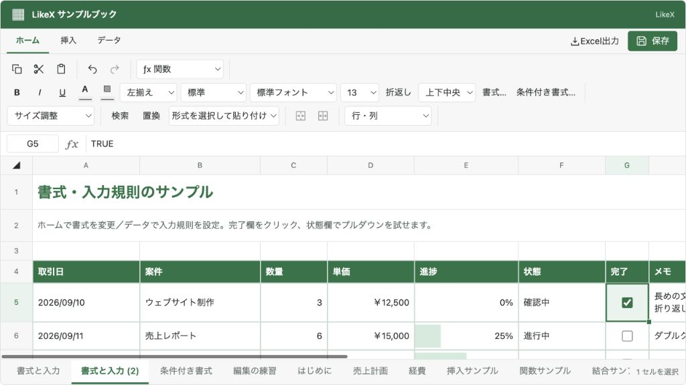

@likex/spreadsheet
シートの操作
シートの追加・名前変更・複製・削除・並べ替えを、画面と外部APIから行います。
画面例を見る ↓シートの内容は SpreadsheetWorkbook.sheets に保存し、配列の順番をタブの表示順として使います。シートIDは追加・複製時に生成し、名前変更や並べ替えでは維持します。
画面からの操作#
| 操作 | 方法 |
|---|---|
| 追加 | シートタブの右の「＋」を押す。 |
| 名前変更 | 選択済みのシートタブをもう一度クリック。Enterまたはフォーカス移動で確定、Escapeで取り消す。 |
| 複製 | シートタブを右クリックし「複製」を選ぶ。 |
| 並べ替え | シートタブをドラッグして挿入位置へ移動。タブにフォーカスした状態のAlt + Shift + 左右キーでも移動できる。 |
| 削除 | シートタブを右クリックし「削除」を選ぶ。最後の1シートは削除できない。 |
セルやシート名を編集中の場合は、確定してから並べ替えます。シートタブを右クリックするだけでは表示中のシートや選択範囲は変わりません。メニューの操作は右クリックしたシートを対象にします。
外部API#
SpreadsheetHandle.executeAsync に対象のIDを渡します。名前や位置でシートを識別する必要はありません。
const api = spreadsheetRef.current;
if (!api) return;
const added = await api.executeAsync({ type: "sheets.add", name: "月次集計" });
if (!added.ok) throw new Error(added.message);
const sheetId = added.results[0].sheetId;
const result = await api.batchAsync([
{ type: "cells.set", sheetId, values: { A1: "売上", B1: "1200" } },
{ type: "sheets.rename", sheetId, name: "9月の集計" },
{ type: "sheets.move", sheetId, index: 0 },
]);
if (!result.ok) console.error(result.message);| コマンド | 引数・結果 |
|---|---|
sheets.add | name?。省略時は未使用の Sheet1、Sheet2 など。100行×26列の空シートを末尾へ追加し、結果に新しい sheetId を返す。 |
sheets.rename | sheetId, name。同じシートを参照する数式も新しい名前へ更新する。 |
sheets.duplicate | sheetId, name?。元シートの直後へ複製し、結果に新しい sheetId を返す。 |
sheets.move | sheetId, index。移動後の位置を0始まりで指定。0からsheets.length - 1まで。 |
sheets.delete | sheetId。削除したシートへの数式参照は #REF! になる。 |
シート名は1〜31文字です。重複する名前（大文字・小文字の違いだけを含む）や、Excelのシート名に使えない文字は受け付けません。1ブック100シートまでです。
複製#
シートタブの右クリックメニューから「複製」を選ぶと、元シートの直後にコピーします。セル・書式・入力規則・条件付き書式・図形・画像・コメントなどを保持し、シートと図形・コメントには新しいIDを付けます。画像リソースは共有するため、同じ画像データを重複して保存しません。
名前を省略した場合は 売上 (2)、売上 (3) のように既存名と重複しない名前にします。コピー内で明示的に元シートを参照していた数式は、新しいシート名への自己参照に変えます。元シートや他のシートの数式は変更しません。
const result = await spreadsheetRef.current?.executeAsync({
type: "sheets.duplicate",
sheetId: "sales",
name: "売上の検討用", // 省略可。指定した名前が重複する場合は拒否。
});
if (result?.ok) {
const createdSheetId = result.results[0].sheetId;
}保存・履歴・選択#
追加・改名・複製・削除・並べ替えはローカル下書きに反映します。編集許可、onChange、変更イベント、Undo/Redoの対象です。永続化は別途 onSave で行います。1回の batchAsync は1回のUndoで戻せます。
同じ名前や同じ位置への変更では、履歴・変更通知・編集要求を増やしません。並べ替えてもシートID・内容・数式参照・選択を保持します。外部APIは新しく追加したシートへ画面を自動で切り替えません。
表示前のデータを加工する場合は、addSheet(workbook, name?)、renameSheet(workbook, sheetId, name)、moveSheet(workbook, sheetId, index)、deleteSheet(workbook, sheetId) を使えます。元のブックを変更せず新しいブックを返す関数です。表示中の下書きへ反映したい場合はHandleを使ってください。
機能のON・OFF#
<Spreadsheet
initialWorkbook={workbook}
onSave={saveWorkbook}
features={{ createSheet: false, duplicateSheet: false, deleteSheet: false }}
style={{ height: 560 }}
/>この例では既存シートの切り替え・名前変更・並べ替えを許可し、追加・複製・削除を無効にします。
features.sheets: false はタブ表示とシート操作全体を無効にします。個別の設定は createSheet、renameSheet、duplicateSheet、deleteSheet、reorderSheets です。複製には sheets と createSheet も有効である必要があります。readOnly: true または onSave 未指定では変更できません。既存シートのデータはOFFにしても保存JSONに保持します。
シートタブのメニューを追加したい場合は右クリックメニューを参照してください。
画面例
{kind=link}
